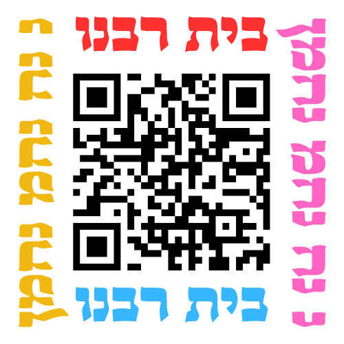

הקודם
הבא
סדר: רגיל
זמן:
3 שניות
5 שניות
7 שניות
10 שניות
15 שניות
20 שניות
30 שניות
5 דקות
15 דקות
30 דקות
1 שעה
6 שעות
12 שעות
24 שעות
נושא:
כל הנושאים
מסך מלא
טוען נתונים...
נ
נח
נחמ
נחמן
מ
א
ו
מ
ן
